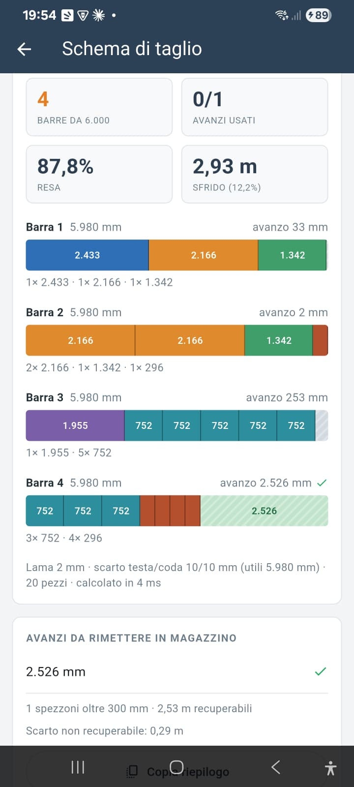
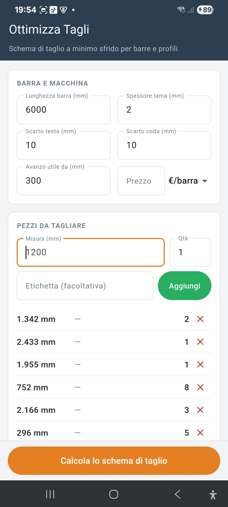
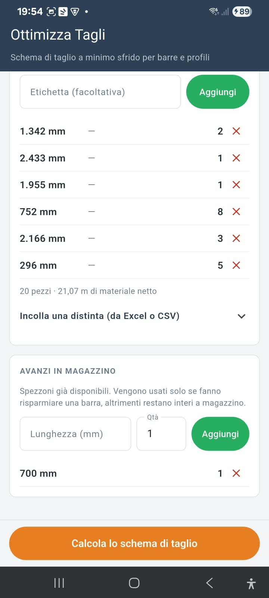

Il risultato, subito chiaro
Inserisci le misure, l'app calcola lo schema di taglio ottimale in pochi millisecondi.

Barre da tagliare, resa percentuale, sfrido e avanzi da rimettere in magazzino: tutto in un'unica schermata.
<10mstempo di calcolo
100%offline
0dati raccolti
Come funziona
- Imposta barra e macchina. Lunghezza della barra, spessore della lama, scarti di testa e coda, soglia minima per considerare un avanzo riutilizzabile.
- Inserisci i pezzi da tagliare. Una misura alla volta, oppure incollando una distinta intera da Excel o CSV: l'app riconosce misura, quantità ed etichetta.
- Calcola lo schema. L'app combina più strategie di ottimizzazione e tiene il risultato migliore: meno barre nuove possibili, e a parità di barre il maggior materiale riutilizzabile.
- Taglia e rimetti a magazzino. Il risultato mostra barra per barra i pezzi da ricavare e quali spezzoni conviene conservare invece di buttare.

Cosa tiene in conto
Il problema del taglio ottimale (cutting stock) sembra semplice ma nasconde dettagli che cambiano il risultato. Ottimizza Tagli li calcola tutti.
Spessore lama
Ogni taglio consuma materiale. Se un pezzo arriva a filo barra, l'app lo sa e non spreca un taglio inutile.
Scarti di testa e coda
Riducono la lunghezza realmente utilizzabile della barra: vengono sottratti prima di ogni calcolo.

Avanzi di magazzino
Gli spezzoni già disponibili vengono provati prima delle barre nuove, ma usati solo se fanno davvero risparmiare una barra intera.
Soglia di riutilizzo
Sotto la misura minima impostata, un avanzo è considerato scarto e non viene proposto per il riutilizzo.
Risultato riproducibile
A parità di dati inseriti, l'app restituisce sempre lo stesso schema: nessuna sorpresa fra un calcolo e l'altro.
Incolla da Excel o CSV
Una riga per misura, con o senza quantità ed etichetta: la distinta si legge da sola, senza doverla ribattere a mano.
100% offline
Il progetto resta salvato sul telefono. In officina e in cantiere la rete non c'è, e l'app non ne ha bisogno.
Copia riepilogo
Un tocco per copiare il risultato e incollarlo dove serve: un messaggio, un promemoria, un foglio di lavorazione.
Per chi è pensata
Falegnami
Fabbri e carpentieri metallici
Serramentisti
Chi lavora profili e tubolari
Officine e cantieri
Scarica ora gratuitamente
Disponibile per dispositivi Android
Se il link non è ancora attivo, l'app è in fase di pubblicazione: torna a trovarci a breve.